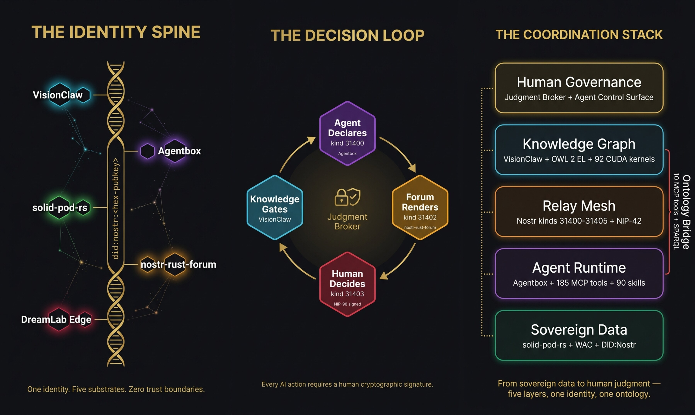

Federated Human–AI
Intelligence
The coordination harness where diverse intelligence collaborates across trust boundaries at scale. Self-sovereign data. Formal reasoning. Cryptographic provenance. Human-in-the-loop governance.
Hard problems share a common shape
Climate modelling, drug discovery, organisational transformation, creative production at scale — they require diverse intelligence to collaborate across trust boundaries, at scales that defeat centralised coordination.
Centralised AI
Scales tokens but not trust. One vendor, one failure mode, one billing relationship.
Agent Frameworks
Scale tasks but not governance. Fast and broken is still broken.
Knowledge Tools
Scale information but not reasoning. More data doesn’t mean better decisions.
Collaboration Platforms
Scale communication but not coordination. More Slack channels don’t solve alignment.
73% of frontline AI adoption happens without management sign-off. Your workforce is already building shadow workflows, stitching together AI agents, automating procurement shortcuts. The question isn’t whether your organisation is becoming an agentic mesh. It’s whether you’ll shape how it forms.
From LLM to Coordination Harness
The AI industry has moved through a clear progression. Each stage solves the previous stage’s limitation and reveals a new one.
| Stage | What It Adds | What It Still Lacks |
|---|---|---|
| LLM | Pattern recognition at scale | No interface, no memory, no tools |
| Chatbot | Conversational access | No structured reasoning |
| Reasoning | Chain-of-thought, self-correction | Can think but can’t act |
| Agent | Tool use, planning, execution | No collaboration, no oversight |
| Agentics | Multi-agent coordination | No identity, no sovereignty, no governance |
| External Harness | Sovereign runtime, privacy | Individual agents governed, mesh is not |
| Coordination Harness | Shared semantics, federated identity, governance, provenance | VisionFlow occupies this position |
The architecture emerges when five independent systems mesh through a shared cryptographic identity spine
did:nostr:<hex-pubkey>
Every actor — human, agent, server, worker — identified by a single secp256k1 keypair. Verified at the relay, at every HTTP request, against WAC ACLs, in every provenance bead, and resolvable as a DID Document.
VisionClaw
Knowledge Engineering- OWL 2 EL formal reasoning (Whelk-rs)
- 92 CUDA kernels, 55x GPU speedup
- IS-Envelope spec owner + knowledge graph gating
- 17 MCP ontology tools (7 native + 10 bridge)
- 934-node force-directed graph in real time
Agentbox
Harness Engineering- Governance event relay + broker bridge to VisionClaw
- 90+ agent skills, 185+ MCP tools
- 10-tool ontology bridge to VisionClaw SPARQL
- Browser-based setup wizard (zero dependencies)
- BIP-340 sovereign identity at bootstrap
solid-pod-rs
Cryptographic Foundation- Rust port of JSS (~98% parity)
- DID:Nostr + WAC + Web Ledgers
- NIP-98 Schnorr + Solid-OIDC + WebAuthn
- HTTP 402 micropayments (MRC20)
- Dual compile: native Tokio + WASM CF Workers
nostr-rust-forum
Governance UI + Relay Kit- Judgment Broker decision surface (1,015-line governance model)
- Agent Control Surface Protocol (kinds 31400-31405)
- Leptos WASM client (19 pages, 60+ components)
- 12 crates, passkey-first auth, 5 CF Workers
- Federated NIP-05 resolution (default mode)
DreamLab Edge
Branded Deployment- React SPA + Leptos WASM forum
- Cloudflare Workers edge compute
- Production at dreamlab-ai.com
- Operator overlay configuration
- Consumes all substrates as library crates

VisionClaw — 934-node force-directed knowledge graph with OWL 2 EL formal reasoning, GPU-accelerated at 55x
The Coordination Bottleneck
A cinematic walkthrough of why coordinated AI reasoning — not raw intelligence — is the limiting factor in high-stakes domains.
Human-in-the-loop governance that accelerates, not blocks
The Judgment Broker is not a service — it’s what emerges when agents, humans, a knowledge graph, and a relay mesh coordinate through a shared cryptographic identity. No single repository owns the complete broker. The decision loop is distributed: agents publish through Agentbox, humans decide through the forum, knowledge is gated through VisionClaw, and provenance is anchored in sovereign pods.
Agent Declares Agentbox
kind 31400 PanelDefinition — agent publishes a control panel with schema, fields, actions via the governance MCP tools
Forum Renders nostr-rust-forum
kind 31402 ActionRequest — the forum’s 1,015-line governance model renders the panel and routes it to the right human
Human Decides NIP-98 signed
kind 31403 ActionResponse — cryptographically signed approve/reject/amend/delegate — the decision is an immutable Nostr event
Knowledge Gates VisionClaw
The decision flows back through the relay mesh. VisionClaw gates knowledge graph mutations; provenance beads anchor the audit trail in sovereign pods.
| Kind | Name | Direction | Purpose |
|---|---|---|---|
31400 | PanelDefinition | Agent → Relay | Declare control panel |
31401 | PanelState | Agent → Relay | Current data snapshot |
31402 | ActionRequest | Agent → Relay | Request human decision |
31403 | ActionResponse | Human → Relay | Signed decision |
31404 | PanelUpdate | Agent → Relay | Incremental state diff |
31405 | PanelRetired | Agent → Relay | Retire panel |
Why extreme token consumption against hard problems is rational
The Cost of Not Coordinating
A 50-person team running uncoordinated AI agents wastes 60-80% of tokens on context rediscovery, duplicate reasoning, and contradictory outputs. Each agent session starts cold — no shared ontology, no provenance, no memory of what other agents concluded.
Coordination as Token Multiplier
VisionFlow’s shared ontology means agents don’t re-derive domain vocabulary. The provenance chain means agents don’t re-validate conclusions. The Judgment Broker means agents don’t spin on decisions they lack authority to make.
Hard Problems Justify Deep Spend
Drug discovery: $2.6B average cost per approved compound. Climate modelling: $50M+ per actionable simulation suite. Creative production: $100M+ per franchise. Against these stakes, spending $10K-100K on coordinated AI reasoning is a rounding error — if the coordination harness prevents even one wrong conclusion from propagating.
The Governance Dividend
Every governance decision that flows through the Judgment Broker is an immutable, auditable event. In regulated industries (pharma, finance, defence), the cost of reconstructing decision provenance after the fact dwarfs the cost of generating it by construction.
The Coordination Harness ROI Model
For a team of N agents working on a problem of value V:
ROI = (V × coordination_multiplier × governance_dividend) / (token_cost × N)
Without coordination: agents compete, duplicate, and contradict. Each additional agent adds noise faster than signal. With VisionFlow: each agent amplifies the mesh. Shared semantics compound. Provenance eliminates re-validation. Governance prevents expensive mistakes from propagating.
The break-even point is typically reached at 3 agents working on any problem valued above $50K. Beyond that, every additional coordinated agent produces net positive value — because the ontology, the identity spine, and the governance plane are shared infrastructure, not per-agent costs.
Federated problem-solving across trust boundaries
Climate Modelling Consortium
Three universities, two government agencies, one NGO. Each institution runs its own VisionClaw with domain-specific ontologies. OWL 2 EL reasoning ensures “sea surface temperature anomaly” means the same thing across all ontologies. Data stays in sovereign pods; cross-institutional findings surface through the Judgment Broker.
Pharmaceutical Drug Discovery
Biotech startup + CRO + regulatory consultancy. Literature mining agents parse 50K papers, chemistry agents run ADMET predictions, compliance agents map to ICH guidelines. Each organisation’s agents operate within their Solid pod boundary. The CRO never sees the biotech’s proprietary target list.
Creative Production at Scale
12-episode series, five time zones. Production ontology maps episodes to scenes to shots to assets. VFX agents track pipeline stages. When a VFX shot depends on an unapproved 3D asset, the OWL 2 constraint propagates through the graph — the GPU physics engine makes the blocked dependency visually obvious.
Real-World Validation
50-person team, ~998 graph nodes, daily production
Research partnership, semantic force-directed layout
250+ concurrent XR users, immersive data visualisation
Three structural gaps no competitor can close
Every differentiator sits where no competitor can follow. All 11 competing platforms cluster in the commodity zone where there is no structural differentiation.
| Platform | Crypto Identity | Data Sovereignty | Governance | Formal Reasoning | Federation | OSS |
|---|---|---|---|---|---|---|
| VisionFlow | ||||||
| Google Spark | ||||||
| OpenAI Codex | ||||||
| Claude Code | ||||||
| Devin | ||||||
| CrewAI | ||||||
| AutoGen | ||||||
| LangGraph | ||||||
| Cursor / Windsurf |
Formal Reasoning Column: Solid Red
Every competitor relies on probabilistic LLM inference. VisionFlow’s OWL 2 EL subsumption produces provably correct entailments — not confident guesses.
Crypto Identity Column: Solid Red
Only VisionFlow implements cryptographic agent identity at the protocol level. Every other platform ties identity to someone else’s server.
Federation Column: Solid Red
No competitor supports sovereign nodes trusting each other via cryptographic identity rather than shared infrastructure.
Three axes, one architecture
Token-Efficient
One Agentbox, standalone mode. Local SQLite beads, local Solid pod, local events. 90+ skills, 180+ tools, privacy filter active.
Governed Collaboration
VisionClaw + forum + Agentbox on a shared relay mesh. Shared ontology, Judgment Broker oversight. Every mutation passes through a GitHub PR.
Federated Intelligence
Multiple sovereign Agentbox instances via Nostr relay mesh. Each node independently hardened. Trust via did:nostr, not network topology.
Six federated repositories, one coordination architecture
VisionFlow
Ecosystem guide and coordination architecture
This repositoryVisionClaw
Knowledge engineering substrate
OWL 2 EL · CUDA · XR · MCPAgentbox
Harness engineering runtime
Nix · 90+ skills · 180+ tools · Solid podssolid-pod-rs
Cryptographic foundation
JSS Rust port · DID:Nostr · WAC · HTTP 402nostr-rust-forum
Governance UI + relay kit
12 crates · Passkey auth · Leptos WASMdreamlab-ai-website
Branded deployment
React SPA · WASM forum · CF Workers